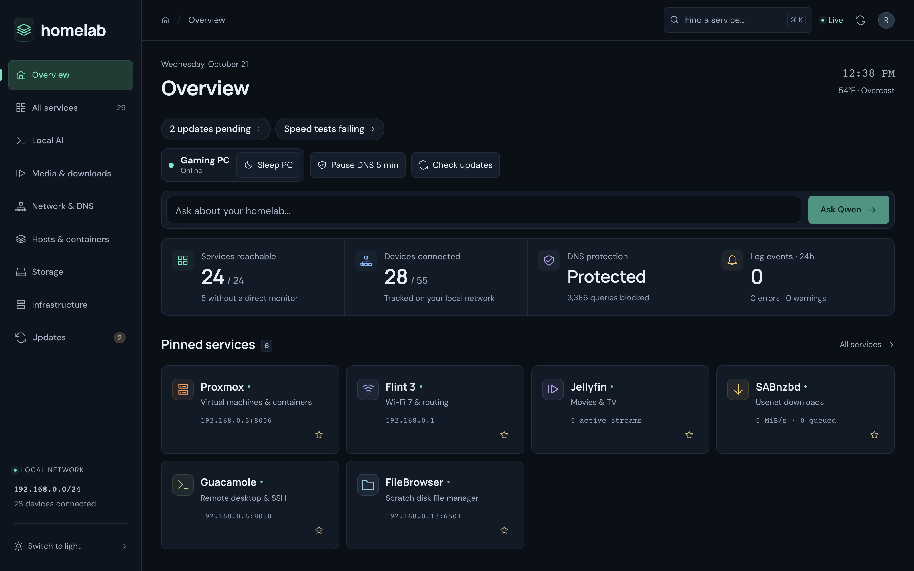
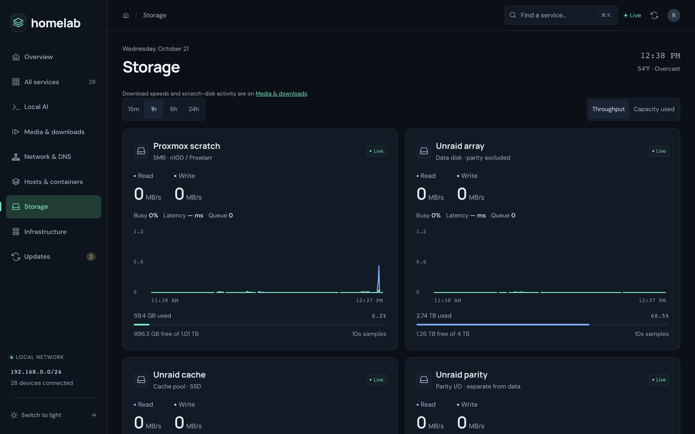
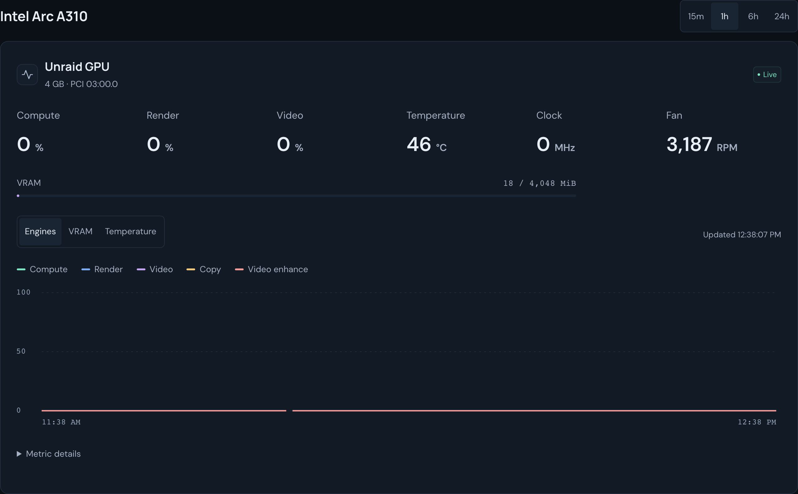
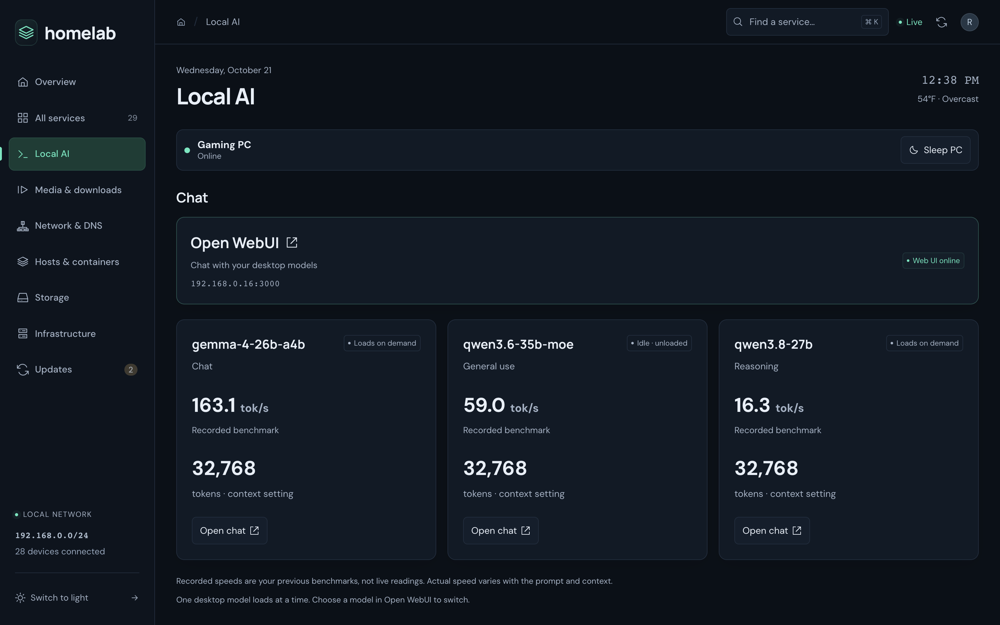
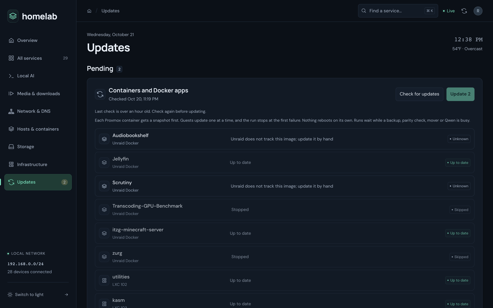
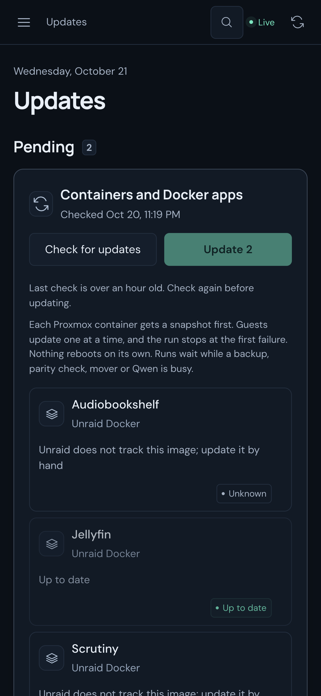
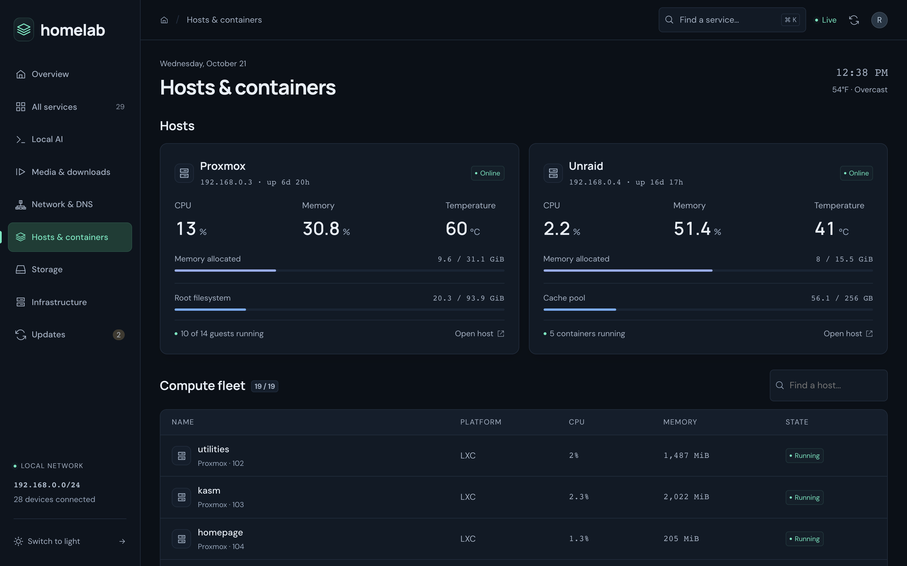
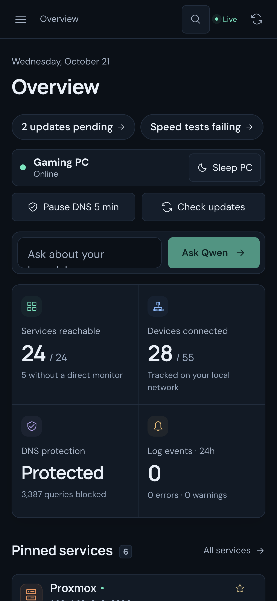

A dashboard for a Proxmox and Unraid homelab. It shows host and disk activity as it happens, checks every service, answers questions with a local AI model, and runs updates safely.

A status line at the top says “All clear” or lists what needs attention, and each item opens its page. Below it: power for the gaming PC, a DNS pause, an update check, and a one-line box for asking the local Qwen model.
Read and write speed, busy time and latency for each disk, taken from the Linux kernel’s counters. The Arc A310 panel, now on the Local AI page, shows render, compute and VRAM use.


Three models run on an RTX 5070 Ti through llama.cpp, and the page shows whether the gaming PC is on, with Wake and Sleep buttons. A small Qwen model on the Arc A310 answers questions about the homelab and shows the data it used.

Each Proxmox container gets a snapshot before apt upgrade. Docker apps update through Unraid’s own updater. The run stops at the first failure and shows the rollback command.


Host health for Proxmox and Unraid at the top, then CPU, memory and state for every guest. Machines that are off on purpose show in grey and sort to the bottom.

